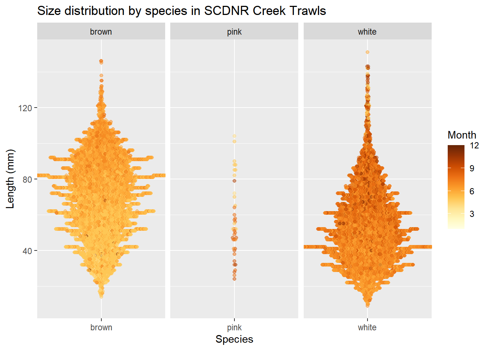
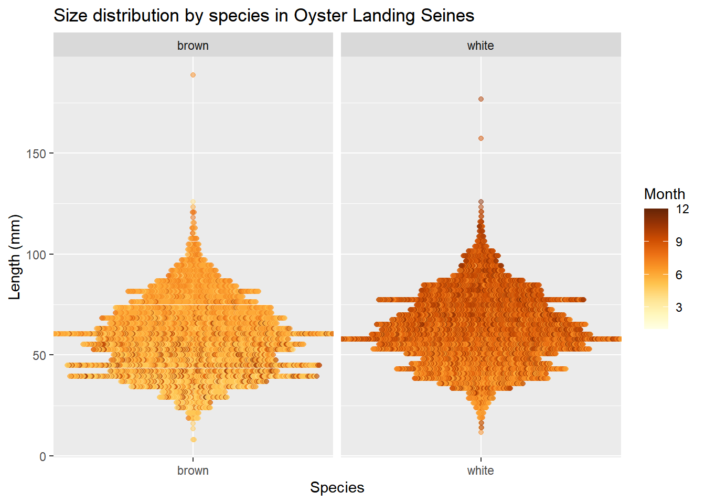
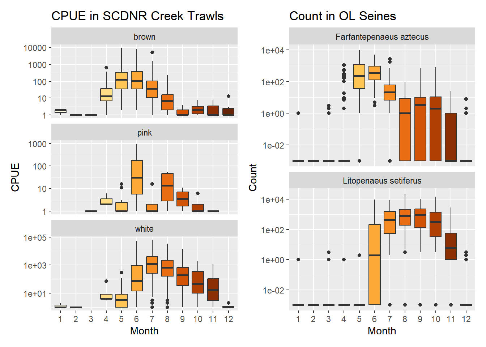

Code
library(tidyverse)
library(patchwork)
library(readxl)
library(ggbeeswarm)
source("functions.R")
in_path <- here::here("data", "raw", "juv")
surv_sc <- "SCDNR Creek Trawls"
surv_ol <- "Oyster Landing Seines"There are two datasets that represent juveniles: SCDNR’s Creek Trawls, and NIW NERR’s Oyster Landing seines. We will explore each.
library(tidyverse)
library(patchwork)
library(readxl)
library(ggbeeswarm)
source("functions.R")
in_path <- here::here("data", "raw", "juv")
surv_sc <- "SCDNR Creek Trawls"
surv_ol <- "Oyster Landing Seines"juv_sc_cpue <- read.csv(here::here(in_path, "SCDNR_CreekTrawlShrimpCPUE.csv"))
juv_sc_size <- read.csv(here::here(in_path, "SCDNR_CreekTrawlShrimpSize.csv"))
juv_ol <- read.csv(here::here(in_path,
"Oyster Landing Seine Shrimp Dataset - 1984-2023 (BWP, 2025-04-24)(kac 2025-06-02).csv"))# Pull out date characteristics and deal with column types if necessary; change Species columns to common names.
juv_sc_size <- juv_sc_size |>
mutate(Date = lubridate::mdy(DTStart),
Year = lubridate::year(Date),
Month = lubridate::month(Date),
Species = case_when(Species == "Penaeus aztecus" ~ "brown",
Species == "Penaeus setiferus" ~ "white",
Species == "Penaeus duorarum" ~ "pink",
.default = "uh-oh"))
juv_sc_cpue <- juv_sc_cpue |>
mutate(Species = case_when(Species == "Penaeus aztecus" ~ "brown",
Species == "Penaeus setiferus" ~ "white",
Species == "Penaeus duorarum" ~ "pink",
.default = "uh-oh"))
juv_ol <- juv_ol |>
mutate(Date = lubridate::mdy(Date),
Month = lubridate::month(Date),
Temp = case_when(Temp == "DataGap" ~ NA_character_,
Temp == "" ~ NA_character_,
.default = Temp),
Sal = case_when(Sal == "DataGap" ~ NA_character_,
Sal == "" ~ NA_character_,
.default = Sal),
Weight = case_when(Weight == "." ~ NA_character_,
.default = Weight),
Temp = as.numeric(Temp),
Sal = as.numeric(Sal),
Weight = as.numeric(Weight),
Species = case_when(Species == "Farfantepenaeus aztecus" ~ "brown",
Species == "Litopenaeus setiferus" ~ "white",
.default = "uh-oh"))juv_ol_count <- juv_ol |>
select(Sample:Count)
juv_ol_size <- juv_ol |>
select(Sample:Species,
starts_with("LEN")) |>
pivot_longer(cols = starts_with("LEN"),
names_to = "Rep",
values_to = "Length") |>
filter(!is.na(Length))# save to use later
save(juv_sc_cpue, juv_sc_size,
juv_ol_count, juv_ol_size,
file = here::here("data",
"intermediate",
"juvenile_dfs.RData"),
compress = "xz")Beeswarm plots can be slow to render so I have subsetted both data frames here to 15,000 rows.
set.seed(1234)
# subsample OL
juv_ol_size_ind <- sample(1:nrow(juv_ol_size), size = 15000, replace = FALSE)
juv_ol_sizeb <- juv_ol_size[juv_ol_size_ind, ]
# subsample SC
juv_sc_sizeb_ind <- sample(1:nrow(juv_sc_size), size = 15000, replace = FALSE)
juv_sc_sizeb <- juv_sc_size[juv_sc_sizeb_ind, ]beeswarm_sizeDistn(juv_sc_sizeb,
x = "Species", y = "Length", month = "Month",
survey = surv_sc)
beeswarm_sizeDistn(juv_ol_sizeb,
x = "Species", y = "Length", month = "Month",
survey = surv_ol)
Looks like OL seines are generally catching smaller individuals of both species than the SCDNR creek trawls.
p1 <- juv_sc_cpue |>
mutate(TotNum = CPUE + 0.0001) |>
ggplot() +
geom_boxplot(aes(x = factor(Month),
y = CPUE,
fill = Month)) +
facet_wrap(~Species, ncol = 1, scales = "free_y") +
scale_y_log10() +
khroma::scale_fill_YlOrBr() +
labs(title = "CPUE in SCDNR Creek Trawls",
x = "Month") +
theme(legend.position = "none")
p2 <- juv_ol_count |>
mutate(Count = Count + 0.001) |>
ggplot() +
geom_boxplot(aes(x = factor(Month),
y = Count,
fill = Month)) +
scale_y_log10() +
khroma::scale_fill_YlOrBr() +
facet_wrap(~Species, ncol = 1, scales = "free_y") +
labs(title = "Count in OL Seines",
x = "Month") +
theme(legend.position = "none")
p1 + p2
Both surveys (unsurprisingly) show the same temporal pattern of abundance - aztecus in May/June, with setiferus later in the year.
skimr::skim_without_charts(juv_sc_cpue)| Name | juv_sc_cpue |
| Number of rows | 5619 |
| Number of columns | 13 |
| _______________________ | |
| Column type frequency: | |
| character | 5 |
| numeric | 8 |
| ________________________ | |
| Group variables | None |
Variable type: character
| skim_variable | n_missing | complete_rate | min | max | empty | n_unique | whitespace |
|---|---|---|---|---|---|---|---|
| StationCode | 0 | 1 | 4 | 4 | 0 | 7 | 0 |
| EstuaryCode | 0 | 1 | 2 | 2 | 0 | 1 | 0 |
| DTStart | 0 | 1 | 8 | 10 | 0 | 621 | 0 |
| SpCode | 0 | 1 | 4 | 4 | 0 | 3 | 0 |
| Species | 0 | 1 | 4 | 5 | 0 | 3 | 0 |
Variable type: numeric
| skim_variable | n_missing | complete_rate | mean | sd | p0 | p25 | p50 | p75 | p100 |
|---|---|---|---|---|---|---|---|---|---|
| X | 0 | 1 | 2810.00 | 1622.21 | 1.00 | 1405.50 | 2810.00 | 4214.50 | 5619.00 |
| Coll | 0 | 1 | 20030686.47 | 133365.28 | 19801003.00 | 19911032.00 | 20031007.00 | 20161081.00 | 20231084.00 |
| Year | 0 | 1 | 2002.97 | 13.34 | 1980.00 | 1991.00 | 2003.00 | 2016.00 | 2023.00 |
| Month | 0 | 1 | 6.62 | 1.91 | 1.00 | 5.00 | 7.00 | 8.00 | 12.00 |
| Day | 0 | 1 | 15.29 | 8.38 | 1.00 | 9.00 | 15.00 | 22.00 | 31.00 |
| CPUE | 3 | 1 | 546.00 | 2690.49 | 0.00 | 0.00 | 0.00 | 82.00 | 62976.00 |
| Lat | 0 | 1 | 32.84 | 0.07 | 32.75 | 32.80 | 32.86 | 32.86 | 32.95 |
| Long | 0 | 1 | -79.89 | 0.08 | -79.99 | -79.98 | -79.88 | -79.85 | -79.76 |
skimr::skim_without_charts(juv_ol_count)| Name | juv_ol_count |
| Number of rows | 1796 |
| Number of columns | 12 |
| _______________________ | |
| Column type frequency: | |
| character | 4 |
| Date | 1 |
| numeric | 7 |
| ________________________ | |
| Group variables | None |
Variable type: character
| skim_variable | n_missing | complete_rate | min | max | empty | n_unique | whitespace |
|---|---|---|---|---|---|---|---|
| Protocol | 0 | 1 | 7 | 8 | 0 | 3 | 0 |
| WQ.Source | 2 | 1 | 8 | 19 | 0 | 4 | 0 |
| WQ.Time | 2 | 1 | 0 | 5 | 36 | 74 | 0 |
| Species | 0 | 1 | 5 | 5 | 0 | 2 | 0 |
Variable type: Date
| skim_variable | n_missing | complete_rate | min | max | median | n_unique |
|---|---|---|---|---|---|---|
| Date | 0 | 1 | 1984-01-04 | 2023-12-21 | 2002-02-18 | 898 |
Variable type: numeric
| skim_variable | n_missing | complete_rate | mean | sd | p0 | p25 | p50 | p75 | p100 |
|---|---|---|---|---|---|---|---|---|---|
| Sample | 0 | 1.00 | 449.76 | 259.63 | 1.0 | 225.0 | 449.5 | 675.00 | 899.0 |
| Year | 0 | 1.00 | 2002.63 | 11.71 | 1984.0 | 1993.0 | 2002.0 | 2012.00 | 2023.0 |
| Month | 0 | 1.00 | 6.60 | 3.26 | 1.0 | 4.0 | 7.0 | 9.00 | 12.0 |
| Temp | 94 | 0.95 | 20.47 | 6.91 | 3.8 | 14.5 | 21.6 | 26.90 | 31.4 |
| Sal | 106 | 0.94 | 31.82 | 4.78 | 2.3 | 30.0 | 33.3 | 35.00 | 38.7 |
| Weight | 489 | 0.73 | 625.27 | 2355.88 | 0.0 | 0.0 | 0.0 | 77.05 | 39196.1 |
| Count | 240 | 0.87 | 380.32 | 1326.23 | 0.0 | 0.0 | 0.0 | 62.00 | 22560.0 |
sz_sc_brn <- juv_sc_size |>
filter(Species == "brown")
sz_sc_wht <- juv_sc_size |>
filter(Species == "white")
sz_ol_brn <- juv_ol_size |>
filter(Species == "brown")
sz_ol_wht <- juv_ol_size |>
filter(Species == "white")skimr::skim_without_charts(sz_sc_brn)| Name | sz_sc_brn |
| Number of rows | 34818 |
| Number of columns | 14 |
| _______________________ | |
| Column type frequency: | |
| character | 4 |
| Date | 1 |
| numeric | 9 |
| ________________________ | |
| Group variables | None |
Variable type: character
| skim_variable | n_missing | complete_rate | min | max | empty | n_unique | whitespace |
|---|---|---|---|---|---|---|---|
| DTStart | 0 | 1 | 8 | 10 | 0 | 489 | 0 |
| StationCode | 0 | 1 | 4 | 4 | 0 | 7 | 0 |
| SpCode | 0 | 1 | 4 | 4 | 0 | 1 | 0 |
| Species | 0 | 1 | 5 | 5 | 0 | 1 | 0 |
Variable type: Date
| skim_variable | n_missing | complete_rate | min | max | median | n_unique |
|---|---|---|---|---|---|---|
| Date | 0 | 1 | 1980-05-08 | 2023-12-11 | 1996-06-12 | 489 |
Variable type: numeric
| skim_variable | n_missing | complete_rate | mean | sd | p0 | p25 | p50 | p75 | p100 |
|---|---|---|---|---|---|---|---|---|---|
| X | 0 | 1.00 | 35073.55 | 22862.74 | 1.00 | 15867.25 | 32821.50 | 52650.75 | 81763.00 |
| Coll | 0 | 1.00 | 19981663.40 | 119955.91 | 19801003.00 | 19891005.00 | 19961014.00 | 20061026.00 | 20231080.00 |
| Length | 0 | 1.00 | 69.54 | 22.67 | 12.00 | 52.00 | 71.00 | 86.00 | 151.00 |
| Lat | 0 | 1.00 | 32.83 | 0.07 | 32.75 | 32.80 | 32.81 | 32.86 | 32.95 |
| Long | 0 | 1.00 | -79.91 | 0.08 | -79.99 | -79.98 | -79.96 | -79.85 | -79.76 |
| TempS | 372 | 0.99 | 27.61 | 2.92 | 8.40 | 25.90 | 28.00 | 29.70 | 36.70 |
| SalinityS | 913 | 0.97 | 17.58 | 5.21 | 0.00 | 14.00 | 18.00 | 21.00 | 28.00 |
| Year | 0 | 1.00 | 1998.07 | 12.00 | 1980.00 | 1989.00 | 1996.00 | 2006.00 | 2023.00 |
| Month | 0 | 1.00 | 5.81 | 0.86 | 1.00 | 5.00 | 6.00 | 6.00 | 12.00 |
skimr::skim_without_charts(sz_ol_brn)| Name | sz_ol_brn |
| Number of rows | 15212 |
| Number of columns | 12 |
| _______________________ | |
| Column type frequency: | |
| character | 5 |
| Date | 1 |
| numeric | 6 |
| ________________________ | |
| Group variables | None |
Variable type: character
| skim_variable | n_missing | complete_rate | min | max | empty | n_unique | whitespace |
|---|---|---|---|---|---|---|---|
| Protocol | 0 | 1 | 7 | 8 | 0 | 3 | 0 |
| WQ.Source | 0 | 1 | 8 | 19 | 0 | 4 | 0 |
| WQ.Time | 0 | 1 | 0 | 5 | 409 | 48 | 0 |
| Species | 0 | 1 | 5 | 5 | 0 | 1 | 0 |
| Rep | 0 | 1 | 4 | 6 | 0 | 100 | 0 |
Variable type: Date
| skim_variable | n_missing | complete_rate | min | max | median | n_unique |
|---|---|---|---|---|---|---|
| Date | 0 | 1 | 1984-05-14 | 2023-08-29 | 1999-06-11 | 410 |
Variable type: numeric
| skim_variable | n_missing | complete_rate | mean | sd | p0 | p25 | p50 | p75 | p100 |
|---|---|---|---|---|---|---|---|---|---|
| Sample | 0 | 1.00 | 384.06 | 230.34 | 10.0 | 185 | 383.0 | 543 | 891.0 |
| Year | 0 | 1.00 | 1999.55 | 10.18 | 1984.0 | 1991 | 1999.0 | 2006 | 2023.0 |
| Month | 0 | 1.00 | 6.27 | 1.50 | 1.0 | 5 | 6.0 | 7 | 12.0 |
| Temp | 895 | 0.94 | 25.64 | 2.82 | 6.6 | 24 | 26.0 | 28 | 31.4 |
| Sal | 903 | 0.94 | 32.54 | 3.53 | 7.7 | 31 | 33.8 | 35 | 38.7 |
| Length | 0 | 1.00 | 21.20 | 6.70 | 0.0 | 16 | 21.0 | 26 | 71.0 |
skimr::skim_without_charts(sz_sc_wht)| Name | sz_sc_wht |
| Number of rows | 46792 |
| Number of columns | 14 |
| _______________________ | |
| Column type frequency: | |
| character | 4 |
| Date | 1 |
| numeric | 9 |
| ________________________ | |
| Group variables | None |
Variable type: character
| skim_variable | n_missing | complete_rate | min | max | empty | n_unique | whitespace |
|---|---|---|---|---|---|---|---|
| DTStart | 0 | 1 | 8 | 10 | 0 | 467 | 0 |
| StationCode | 0 | 1 | 4 | 4 | 0 | 7 | 0 |
| SpCode | 0 | 1 | 4 | 4 | 0 | 1 | 0 |
| Species | 0 | 1 | 5 | 5 | 0 | 1 | 0 |
Variable type: Date
| skim_variable | n_missing | complete_rate | min | max | median | n_unique |
|---|---|---|---|---|---|---|
| Date | 0 | 1 | 1980-05-08 | 2023-12-11 | 2003-07-29 | 467 |
Variable type: numeric
| skim_variable | n_missing | complete_rate | mean | sd | p0 | p25 | p50 | p75 | p100 |
|---|---|---|---|---|---|---|---|---|---|
| X | 0 | 1.00 | 45299.88 | 23170.58 | 7.00 | 25467.75 | 48030.50 | 65043.25 | 81764.00 |
| Coll | 0 | 1.00 | 20031152.36 | 124812.02 | 19801003.00 | 19921067.00 | 20031027.00 | 20151040.00 | 20231080.00 |
| Length | 1 | 1.00 | 53.26 | 21.32 | 8.00 | 37.00 | 51.00 | 66.00 | 152.00 |
| Lat | 0 | 1.00 | 32.84 | 0.07 | 32.75 | 32.80 | 32.81 | 32.86 | 32.95 |
| Long | 0 | 1.00 | -79.90 | 0.08 | -79.99 | -79.98 | -79.96 | -79.85 | -79.76 |
| TempS | 215 | 1.00 | 29.22 | 2.98 | 11.00 | 28.30 | 29.60 | 31.00 | 36.70 |
| SalinityS | 822 | 0.98 | 15.99 | 5.81 | 0.00 | 12.00 | 17.00 | 20.00 | 30.00 |
| Year | 0 | 1.00 | 2003.02 | 12.48 | 1980.00 | 1992.00 | 2003.00 | 2015.00 | 2023.00 |
| Month | 0 | 1.00 | 7.43 | 1.11 | 1.00 | 7.00 | 7.00 | 8.00 | 12.00 |
skimr::skim_without_charts(sz_ol_wht)| Name | sz_ol_wht |
| Number of rows | 24387 |
| Number of columns | 12 |
| _______________________ | |
| Column type frequency: | |
| character | 5 |
| Date | 1 |
| numeric | 6 |
| ________________________ | |
| Group variables | None |
Variable type: character
| skim_variable | n_missing | complete_rate | min | max | empty | n_unique | whitespace |
|---|---|---|---|---|---|---|---|
| Protocol | 0 | 1 | 7 | 8 | 0 | 3 | 0 |
| WQ.Source | 0 | 1 | 8 | 19 | 0 | 4 | 0 |
| WQ.Time | 0 | 1 | 0 | 5 | 874 | 51 | 0 |
| Species | 0 | 1 | 5 | 5 | 0 | 1 | 0 |
| Rep | 0 | 1 | 4 | 6 | 0 | 100 | 0 |
Variable type: Date
| skim_variable | n_missing | complete_rate | min | max | median | n_unique |
|---|---|---|---|---|---|---|
| Date | 0 | 1 | 1984-07-12 | 2023-12-11 | 2000-09-11 | 436 |
Variable type: numeric
| skim_variable | n_missing | complete_rate | mean | sd | p0 | p25 | p50 | p75 | p100 |
|---|---|---|---|---|---|---|---|---|---|
| Sample | 0 | 1.00 | 421.82 | 222.99 | 14.0 | 236.0 | 414 | 592.0 | 898.0 |
| Year | 0 | 1.00 | 2001.01 | 9.94 | 1984.0 | 1993.0 | 2000 | 2008.0 | 2023.0 |
| Month | 0 | 1.00 | 8.45 | 1.39 | 1.0 | 7.0 | 8 | 10.0 | 12.0 |
| Temp | 2200 | 0.91 | 25.85 | 3.78 | 10.6 | 23.8 | 27 | 28.8 | 31.4 |
| Sal | 2305 | 0.91 | 32.81 | 3.96 | 5.4 | 31.8 | 34 | 35.1 | 38.7 |
| Length | 0 | 1.00 | 23.84 | 7.09 | 3.0 | 19.0 | 23 | 29.0 | 71.0 |
Input .qmd file for this section was: raw_juv.qmd and can be found in the main directory.
Input data file(s) - as-used; can be found in data/raw/juv:
SCDNR_CreekTrawlShrimpCPUE.csvSCDNR_CreekTrawlShrimpSize.csvOyster Landing Seine Shrimp Dataset - 1984-2023 (BWP, 2025-04-24)(kac 2025-06-02).csvModifications to data:
Species from provided scientific names to ‘brown’, ‘white’, and ‘pink’.Generated data file(s): Data frames were modified as described above, and written to data/intermediate/juvenile_dfs.RData (the single .RData file contains multiple data frames):
juv_sc_cpuejuv_sc_sizejuv_ol_countjuv_ol_sizeOther notes about data: